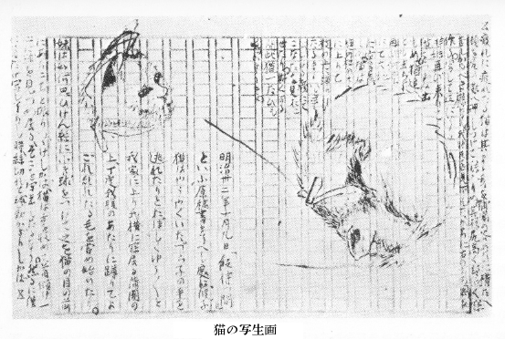

余は昔から朝飯を喰わぬ事にきめて居る
故病人ながらも腹がへって昼飯を待ちかねるのは毎日の事である。今日ははや午砲が鳴ったのにまだ飯が出来ぬ。枕もとには本も
硯も何も出て居らぬ。新聞の一枚も残って居らぬ。仕方がないから
蒲団に
頬杖ついたままぼんやりとして庭をながめて居る。
おとといの
野分のなごりか空は曇って居る。十本ばかり並んだ
 頭
頭は風の害を受けたけれど今は起き直って真赤な頭を揃えて居る。一本の
雁来紅は美しき葉を出して白い干し衣に映って居る。
大毛蓼というものか馬鹿に丈が高くなって薄赤い花は雁来紅の上にかぶさって居る。
さっきこの庭へ三人の子供が来て一匹の子猫を追いまわしてつかまえて往ったが、彼らはまだその猫を持て遊んで居ると見えて垣の外に騒ぐ声が聞える。竹か何かで猫を打つのであるか猫はニャーニャーと細い悲しい声で鳴く。すると高ちャんという子の声で「年ちャんそんなに打つと化けるよ化けるよ」とやや
気遣わしげにいう。今年五つになる年ちャんという子は三人の中の一番年下であるが「なに化けるものか」と平気にいってまた強く打てば猫はニャーニャーといよいよ窮した声である。三人で
暫く何か言って居たが、やがて年ちャんという子の声で「高ちャん高ちャんそんなに打つと化けるよ」と心配そうに言った。今度は六つになる高ちャんという子が打って居るのと見える。ややあって皆々笑った。年ちャんという子が猫を抱きあげた様子で「猫は、猫は、猫は
宜しゅうござい」と大きな声で呼びながらあちらへ往ってしまった。
飯はまだ出来ぬ。
小い黄な蝶はひらひらと飛んで来て干し衣の
裾を廻ったが直ぐまた飛んで往て遠くにあるおしろいの花をちょっと吸うて終に萩のうしろに隠れた。
籠の
鶉もまだ昼飯を
貰わないのでひもじいと見えて頻りにがさがさと籠を
掻いて居る。
台所では皿徳利などの物に触れる音が盛んにして居る。
見る物がなくなって、空を見ると、黒雲と白雲と一面に
丑寅の方へずんずんと動いて行く。次第に黒雲が少くなって白雲がふえて往く。少しは青い空の見えて来るのも嬉しかった。
例の三人の子供は
復我垣の外まで帰って来た。今度はごみため箱の中へ猫を入れて苦しめて喜んで居る様子だ。やがて向いの家の妻君、即ち高ちャんという子のおッかさんが出て来て「高ちャん、猫をいじめるものじャありません、いじめると夜化けて出ますよ、早く逃がしておやりなさい」と叱った。すると高ちャんという子は少し泣き声になって「猫をつかまえて来たのはあたいじャない年ちャんだよ」といいわけして居る。年ちャんという子も間が悪うて黙って居るか暫く静かになった。
かッと畳の上に日がさした。飯が来た。
子規子より「飯待つ間」の原稿送り来されたる同封中に猫の写生画二つあり。一は顔にして、一は尻高く頭低く丸くなりて臥しゐるところなり。その画の周囲に次の如き文章あり。もとより一時の戯れ書きに過ぎざれど、「飯待つ間」と相照応して面白く覚えたれば爰に載録す。写生画もまた子規子の画として面白けれど載すること能はざるは遺憾なり。
（虚子記）

猫の写生画
明治卅二年十月九日「飯待つ間」といふ原稿書きをへし処に、彼子猫はやうやくいたづら子の手を逃れたりとおぼしくゆうゆうと我家に上り我横に寐居る蒲団の上、丁度我腹のあたりに
蹲りてよごれ乱れたる毛を
嘗め始めたり。妹は如何思ひけん糸に小き球をつけてこれを猫の目の前にあちこちと振りつづけしかば、猫は舌を収めて首傾け一心に球を見つめ居る、そこを写生したるなり。しかるに僅に首だけ写しをはりし時、糸切れて球動かざりしかば疲れに疲れたる猫はそのまま身を蒲団の谷あひに横たへ顔を尻の処へ押しつけて寐入りぬ。その様尻高く頭低く寐苦しかるべき様なり。我はそを見下しながらに右の方の図を作る。写して正にをはる時妹再び来りて猫をつまみ出しぬ。なほ追へども去らず、再び何やらにて大地に突き落しぬ。猫は庭の松の木に上りて枝の上に蹲りたるままいと平らなる顔にてこなたを見おこせたり。かくする間この猫一たびも鳴かざりき。
〔自筆稿『ホトトギス』第三巻第一号 明治32・10・10〕